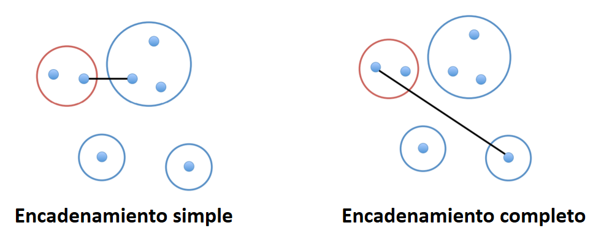
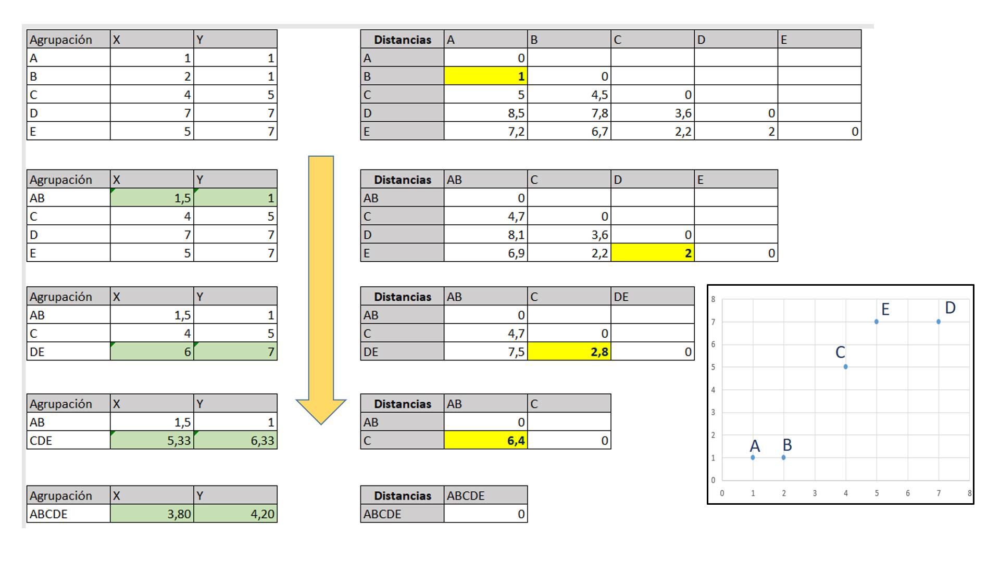
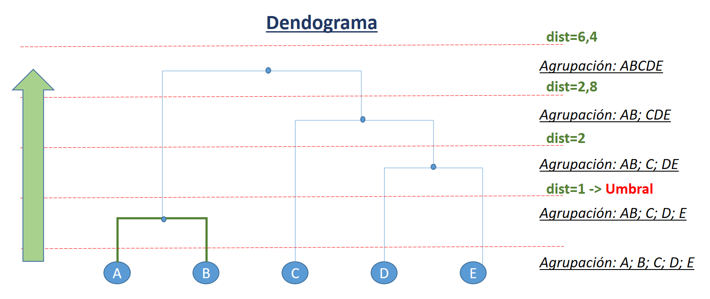
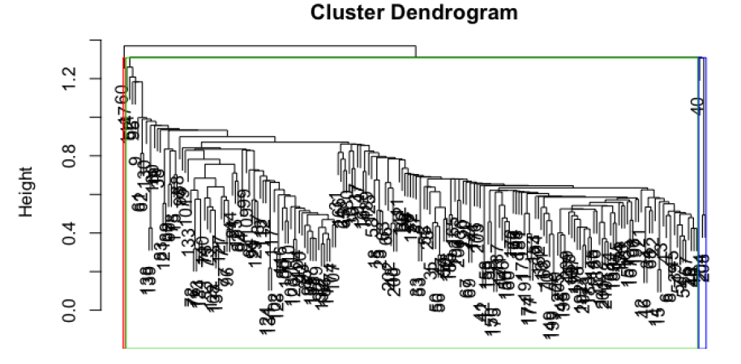
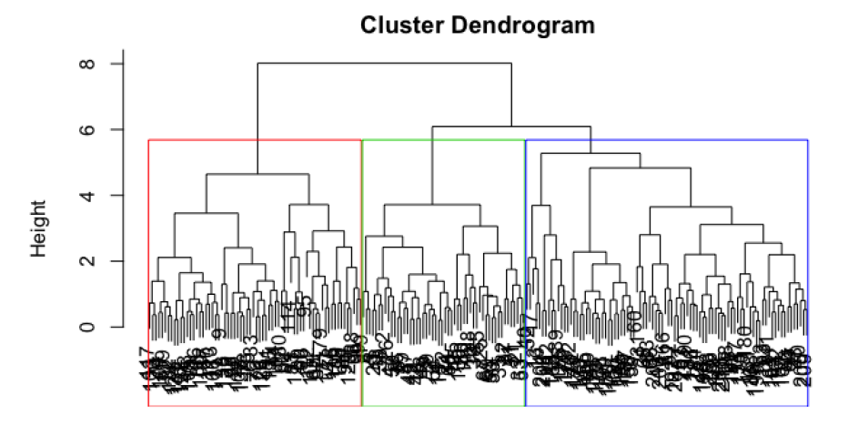
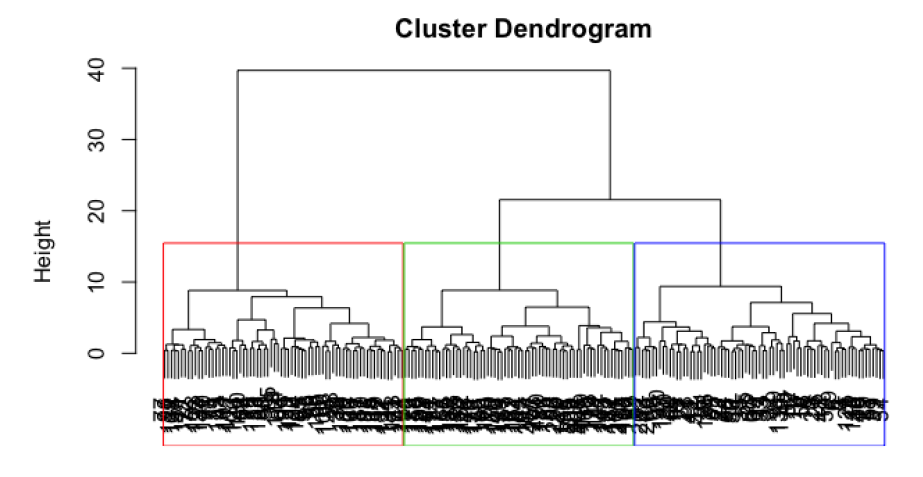
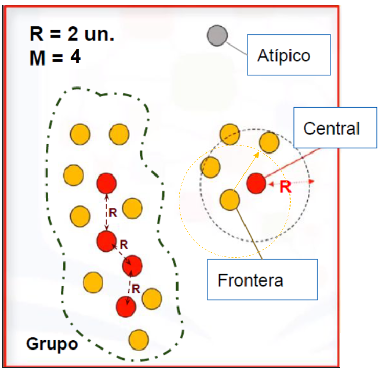

Clustering Jerárquico, Densidad y Mean-Shift#
import matplotlib.pyplot as plt
%matplotlib inline
import pandas as pd
import numpy as np
from skimage import io
from IPython import display
En este cuaderno vamos a necesitar dibujar un dendograma#
Disponible en el “03.0ClusteringUtilidades.ipynb”
run 03.0_ClusteringUtilidades.ipynb
load done!
Descripción general del método de agrupación jerárquica#
A diferencia de K-means, son métodos deterministas.
Parten de una matriz \(D = (d_{ij})\) de distancias o \(S = (s_{ij})\) de similitudes, matrices \(N \times N\) entre los \(N\) elementos del conjunto de instancias.
Si todas las variables son continuas, la distancia más utilizada es la euclídea (con variables estandarizadas univariantemente en caso de ser conveniente).
Si hay variables continuas y categóricas no suele ser aceptable trabajar con distancias y se usan similitudes.
El algoritmo tiene los siguientes pasos:
Comenzamos con N grupos (uno para cada instancia) y la matriz D o S.
Buscamos los elementos más próximos (mínimo valor \(d_{ij}\) o \(s_{ij}\)) y los unimos en un grupo.
Recalculamos la matriz de distancias (o similitudes) definiendo una distancia o similitud entre este nuevo grupo y el resto.
Repetimos los dos pasos anteriores hasta que todas las observaciones estén unidas en un solo grupo
La forma de calcular la distancia entre grupos de puntos puede hacerse de diferentes formas como:
Por encadenamiento simple tomando como distancia de 2 grupos la de los 2 puntos más próximos. Tiende a encadenar individuos sueltos y no grupos.
Por encadenamiento completo tomando como distancia de 2 grupos la de los 2 puntos más alejados. Es menos sensible a atípicos.
Método de Ward que maximiza la homogeneidad intra-grupo. Como medida de homogeneidad se usa la suma de cuadrados de los errores. Tiende a formar grupos esféricos aunque los grupos no lo sean.
Una forma de visualizar la estructura del grupo gerárquico es con el dendograma.
{kind=link}
Ejemplo simple de una agrupación jerárquica#
Un ejemplo simple del proceso de agrupación jerárquica donde se utiliza la distancia euclídea para calcular la matriz de distancias se muestra a continuación.
En cada paso se forma un nuevo grupo que implica el recálculo de las coordenadas de su centroide (en verde).
{kind=link}
Dendograma con el resultado del ejemplo#
Se muestran las posibles soluciones en función del nivel de agrupación
{kind=link}
Caso de uso de la similitud#
En el caso de usar una similitud el algoritmo sería igual pero sustituyendo la matriz de distancia por una de similitud. La diagonal principal serían unos y el cálculo de las similitudes entre dos elementos sería como se indica en el ejemplo que aparece a continuación.
Cluster jerárquico sobre el conjunto Iris#
from sklearn.datasets import load_iris
import pandas as pd
iris = load_iris()
df = pd.DataFrame(iris.data, columns=iris.feature_names)
df['target']=iris['target']
df.head()
X = df.values[:,0:4]
y = df.values[:,4]
Se resuelve un cluster aglomerativo con scikit-learn que es AgglomerativeClustering, cuyos parámetros más importantes son:
n_clusters (int o None, default=2). El número de clústeres a buscar. Debe ser None si distance_threshold no es None.
affinity (str o función llamable, default=’euclidean’). Métrica utilizada. Puede ser “euclidian”, “l1”, “l2”, “manhattan”, “cosine” o “precomputed”. Si la linkage es “ward”, solo se acepta “euclidean”. Si es “precomputed”, se necesita una matriz de distancia (en lugar de una matriz de similitud) como entrada para el método de ajuste.
compute_full_tree (‘auto’ or bool, default=’auto’). Para la ejecución hasta construir n_clusters.
linkage (‘ward’, ‘complete’, ‘average’, ‘single’, default=’ward’).
distance_threshold (float, default=None), es el umbral de distancia de vinculación por encima del cual los clústeres no se fusionarán. Si no es None, n_clusters debe ser None y compute_full_tree debe ser True.
compute_distances (bool, default=False). Calcula las distancias entre los clústeres incluso si no se utiliza la distancia umbral (distance_threshold). Sirve para hacer la visualización de dendrogramas, pero introduce una sobrecarga computacional y de memoria. (Nuevo en versión 0.24)
Según los valores de linkage:
‘ward’ minimiza la varianza de los grupos que se fusionan. En cada etapa, se unen los dos clusters para los cuales se tenga el menor incremento en el valor total de la suma de la varianza en cada cluster. La varianza de un cluster es la suma de las distancias al cuadrado entre cada punto y su centroide: \(\sum_{i=1}^n |x_{i} - \overline{x}|^2\).
‘average’ usa el promedio de las distancias de cada observación de los dos conjuntos.
‘complete’ utiliza las distancias máximas entre todas las observaciones de los dos conjuntos.
‘single’ utiliza el mínimo de las distancias entre todas las observaciones de los dos conjuntos.
from sklearn.cluster import AgglomerativeClustering
ac = AgglomerativeClustering(n_clusters=3, metric='euclidean', linkage='complete')
y_ag = ac.fit_predict(X)
etiquetas=np.unique(y_ag)
y_ag
array([1, 1, 1, 1, 1, 1, 1, 1, 1, 1, 1, 1, 1, 1, 1, 1, 1, 1, 1, 1, 1, 1,
1, 1, 1, 1, 1, 1, 1, 1, 1, 1, 1, 1, 1, 1, 1, 1, 1, 1, 1, 1, 1, 1,
1, 1, 1, 1, 1, 1, 0, 0, 0, 2, 0, 2, 0, 2, 0, 2, 2, 2, 2, 0, 2, 0,
2, 2, 0, 2, 0, 2, 0, 0, 0, 0, 0, 0, 0, 2, 2, 2, 2, 0, 2, 0, 0, 0,
2, 2, 2, 0, 2, 2, 2, 2, 2, 0, 2, 2, 0, 0, 0, 0, 0, 0, 2, 0, 0, 0,
0, 0, 0, 0, 0, 0, 0, 0, 0, 0, 0, 0, 0, 0, 0, 0, 0, 0, 0, 0, 0, 0,
0, 0, 0, 0, 0, 0, 0, 0, 0, 0, 0, 0, 0, 0, 0, 0, 0, 0], dtype=int64)
y
array([0., 0., 0., 0., 0., 0., 0., 0., 0., 0., 0., 0., 0., 0., 0., 0., 0.,
0., 0., 0., 0., 0., 0., 0., 0., 0., 0., 0., 0., 0., 0., 0., 0., 0.,
0., 0., 0., 0., 0., 0., 0., 0., 0., 0., 0., 0., 0., 0., 0., 0., 1.,
1., 1., 1., 1., 1., 1., 1., 1., 1., 1., 1., 1., 1., 1., 1., 1., 1.,
1., 1., 1., 1., 1., 1., 1., 1., 1., 1., 1., 1., 1., 1., 1., 1., 1.,
1., 1., 1., 1., 1., 1., 1., 1., 1., 1., 1., 1., 1., 1., 1., 2., 2.,
2., 2., 2., 2., 2., 2., 2., 2., 2., 2., 2., 2., 2., 2., 2., 2., 2.,
2., 2., 2., 2., 2., 2., 2., 2., 2., 2., 2., 2., 2., 2., 2., 2., 2.,
2., 2., 2., 2., 2., 2., 2., 2., 2., 2., 2., 2., 2., 2.])
import matplotlib.pyplot as plt
names = ['grupo 0', 'grupo 1', 'grupo 2']
marcas = ['*', 'o', 's']
color = ['red', 'green', 'blue']
plt.figure(figsize=(7, 5), dpi=80)
for i in range(len(names)):
cl = i
plt.scatter(X[y_ag==cl,2], X[y_ag==cl,3], c=color[i], alpha=0.5, marker='o', label=names[i])
plt.xlabel("Área")
plt.ylabel("Perímetro")
plt.legend(loc='upper left')
plt.show()
Es posible visualizar el dendograma con la siguiente ejecución#
Para que se pueda dibujar el dendograma es necesario que AgglomerativeClustering construya la variable distances_. Hay que dar una combinación de parámetros que lo permita.
Las variables que maneja el cluster jerarquico y que intervienen en la construcción del dendograma tienen la siguiente estructura:
distances_ : Es una lista con las distancias a las que se han ido efectuando las uniones por orden de aparición en el dendograma. Ocurren de menor distancia a mayor distancia. En el dendograma la escala de las distancias aparece en el eje vertical.
children_ : Es una lista con los pares de elementos que se funden en cada nodo del dendograma. Por cada item de distancia aparece un item con el nodo. El número de filas del conjunto X se corresponde con el nº de elementos de devuelve fit_predict y que se vuelcan en etiquetas, supongamos N. Cuando en el nodo se unen dos elementos individuales en children_ aparecen dos números entre 0 y N-1, pero si unen nodos de agrupaciones anteriores a aperecen valores N o mayor que N.
cluster_dist = AgglomerativeClustering(distance_threshold=None, n_clusters=3, compute_distances=True)
cluster_dist.fit(X)
AgglomerativeClustering(compute_distances=True, n_clusters=3)In a Jupyter environment, please rerun this cell to show the HTML representation or trust the notebook.
On GitHub, the HTML representation is unable to render, please try loading this page with nbviewer.org.
AgglomerativeClustering(compute_distances=True, n_clusters=3)
titulo="Conjunto Iris"
subtitulo="Número de puntos en el nodo (o índice del punto si no hay paréntesis)"
figSize=(8,5)
#plot_dendrogram(cluster_dist, titulo, subtitulo, figSize, truncate_mode='level', p=4)
plot_dendrogram(cluster_dist, titulo, subtitulo, figSize)

plot_dendrogram(cluster_dist, titulo, subtitulo, figSize, truncate_mode='level', p=4)
El encadenamiento simple: tiende a encadenar individuos sueltos y no grupos.
{kind=link}
El encadenamiento completo: es menos sensible a atípicos.
{kind=link}
Ward tiende a formar grupos esféricos aunque los grupos no lo sean
{kind=link}
Clustering por densidad. DBSCAN#
Un cuarto modo de clustering, también determinístico, es el Density-Based Spatial Clustering of Applications with Noise (DBSCAN). Agrupa áreas de alta densidad quitando los puntos atípicos o outliers. Cada grupo se forma por la unión de puntos centrales R-vecinos junto con sus puntos frontera. Los puntos outliers se descartan. La densidad se basa en R, el radio de vecindad y M, mínimo número de vecinos para definir un cluster. Un punto se denomina central si dentro de su R-vecindad hay al menos M puntos. Un punto se denomina frontera si está en la R-vecindad de un central, pero no tiene M R-vecinos. Un punto atípico o outlier es aquel que ni es central, ni frontera.
{kind=link}
from sklearn.cluster import DBSCAN
db = DBSCAN(eps=0.5, min_samples=10, metric='euclidean')
#db = DBSCAN(eps=1, min_samples=40, metric='euclidean')
y_db = db.fit_predict(X)
np.unique(y_db)
array([-1, 0, 1], dtype=int64)
import matplotlib.pyplot as plt
viridis = mpl.colormaps['viridis'].resampled(len(np.unique(y_db)))
plt.figure(figsize=(7, 5), dpi=80)
for i in np.unique(y_db):
cl = i
etiqueta="grupo " + str(i)
if cl==-1:
plt.scatter(X[y_db==cl,2], X[y_db==cl,3], c="k", alpha=0.5, marker='*', label="outlier")
else:
plt.scatter(X[y_db==cl,2], X[y_db==cl,3], color=viridis(i), alpha=0.5, marker='o', label=etiqueta)
plt.xlabel("Área")
plt.ylabel("Perímetro")
plt.legend(loc='upper left')
plt.show()
Clustering Mean-Shift#
La agrupación Mean Shift es un algoritmo basado en ventanas deslizantes que intenta encontrar áreas densas de puntos de datos. Es un algoritmo basado en el centroide, lo que significa que el objetivo es localizar los puntos centrales de cada clúster, lo que funciona actualizando a los candidatos para que los puntos centrales sean la media de los puntos dentro de la ventana deslizante.
Estas ventanas candidatas son filtradas en una etapa de post procesamiento para eliminar los duplicados cercanos, formando el conjunto final de puntos centrales y sus correspondientes grupos.
Para explicar el agrupamiento Mean Shift se considera un conjunto de datos en un espacio bidimensional. Comenzamos con una ventana circular deslizante centrada en el punto C, seleccionada aleatoriamente, y con el radio r como núcleo. Mean Shift implica el desplazamiento iterativo de este núcleo a una región de mayor densidad en cada paso hasta la convergencia.
En cada iteración, la ventana deslizante se desplaza hacia regiones de mayor densidad desplazando el centro de la circunferencia hacia el centroide de los puntos contenidos en la ventana. Gradualmente se moverá hacia áreas de mayor densidad de puntos.
{kind=link}
El desplazamiento de la ventana deslizante sigue de acuerdo a los promedios obtenidos hasta que no hay dirección en la que un desplazamiento pueda acomodar más puntos dentro del núcleo.
Este proceso de los pasos 1 al 3 se realiza con muchas ventanas hasta que todos los puntos se encuentran dentro de una ventana. Cuando se superponen varias ventanas, se conserva la ventana que contiene la mayor cantidad de puntos. A continuación, los puntos de datos se agrupan según la ventana deslizante en la que residen.
A diferencia de la agrupación K Means, no es necesario seleccionar el número de clústeres, ya que el desplazamiento medio lo descubre automáticamente. Es una gran ventaja. El hecho de que los clustering converjan hacia los puntos de máxima densidad también es muy deseable, ya que es bastante intuitivo de entender y encaja bien en un sentido naturalmente basado en datos. El inconveniente es que la selección del tamaño/radio “r” de la ventana puede ser no trivial.
La libreria dispone de la función estimate_bandwidth para ayudar a estimar el ancho de ventana. Hay 2 parámetros fundamentales:
quantile : Debe estar entre [0, 1] 0.5 significa que se utiliza la mediana de todas las distancias por pares. Por defecto adopta el valor 0.3.
n_samples : El número de muestras a utilizar. Si no se proporciona, se utilizan todas las muestras.
from sklearn.cluster import MeanShift, estimate_bandwidth
from sklearn.decomposition import PCA
X = df.values[:,0:4]
y = df.values[:,4]
pca = PCA(n_components=2)
X_pca = pca.fit_transform(X)
# The following bandwidth can be automatically detected using
bandwidth = estimate_bandwidth(X_pca, quantile=0.2, n_samples=None)
ms = MeanShift(bandwidth=bandwidth, bin_seeding=True)
ms.fit(X_pca)
labels = ms.labels_
cluster_centers = ms.cluster_centers_
labels_unique = np.unique(labels)
n_clusters_ = len(labels_unique)
print("Número de grupos estimados : %d" % n_clusters_)
Número de grupos estimados : 3
Se dibuja el resultado#
import matplotlib.pyplot as plt
import matplotlib.markers as mrk
plt.figure(1)
plt.clf()
import random
colors=["#"+''.join([random.choice('0123456789ABCDEF') for i in range(6)])
for j in range(n_clusters_)]
markers = mrk.MarkerStyle(marker='.', fillstyle=u'full').filled_markers
for k, col in zip(range(n_clusters_), colors):
my_members = labels == k
cluster_center = cluster_centers[k]
plt.plot(X_pca[my_members, 0], X_pca[my_members, 1], markers[k], color=col)
plt.plot(
cluster_center[0],
cluster_center[1],
markers[k],
markerfacecolor=col,
markeredgecolor="k",
markersize=14,
)
plt.title("Número de grupos estimados: %d" % n_clusters_)
plt.show()